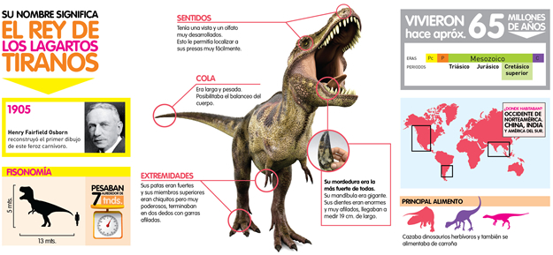
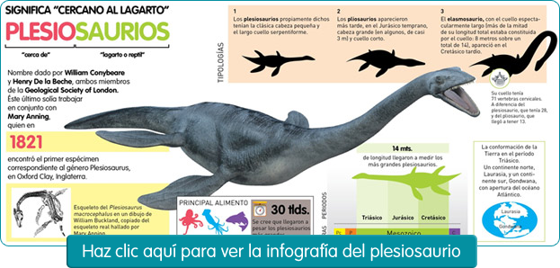

Todos aquellos animales que existieron en la tierra antes de que el hombre comenzara a mantener un registro de sus historia, se llaman "prehistoricos". Estos incluyen las primeras señales de vida, 600 millones de años atrás, peces prehistoricos, dinosaurios y desde luego ¡El hombre!.

En relación con sus largos y poderosos miembros traseros, los miembros superiores del Tyrannosaurus eran pequeños, pero inusualmente fuertes para su tamaño, y terminaban en dos dedos con garras. Aunque otros terópodos rivalizan o superan al Tyrannosaurus rex en tamaño, es todavía el mayor tiranosáurido conocido y uno de los mayores depredadores conocidos de la Tierra, midiendo hasta 12,3 metros de largo,3 4 metros de altura hasta las caderas,4 y con pesos estimados entre 6 a 8 toneladas.3 Durante mucho tiempo fue el mayor carnívoro de su ecosistema, debió haber sido el superpredador, cazando hadrosáuridos y ceratópsidos, aunque algunos expertos han sugerido que era principalmente carroñero. El debate de si Tyrannosaurus fue un depredador dominante o un carroñero es uno de los más largos en la paleontología.
Los plesiosaurios (Plesiosauria) son un orden extinto de saurópsidos (reptiles) sauropterigios que aparecieron a principios del período Jurásico (y posiblemente en el Raetiano, a finales del período Triásico)1 y perduraron hasta la extinción K-T al final del Cretácico, habitando en todos los mares. Con frecuencia se los identifica erróneamente como "dinosaurios marinos". Después de su descubrimiento, se decía humorísticamente que se parecían a "una tortuga con una serpiente ensartada a través de su cuerpo", aunque carecían de caparazón. Se argumenta de vez en cuando que los plesiosaurios no están extintos, aunque no hay ninguna evidencia científica para esta creencia; normalmente se explican los avistamientos modernos que se informan de vez en cuando como cadáveres descompuestos de tiburón peregrino o engaños.
